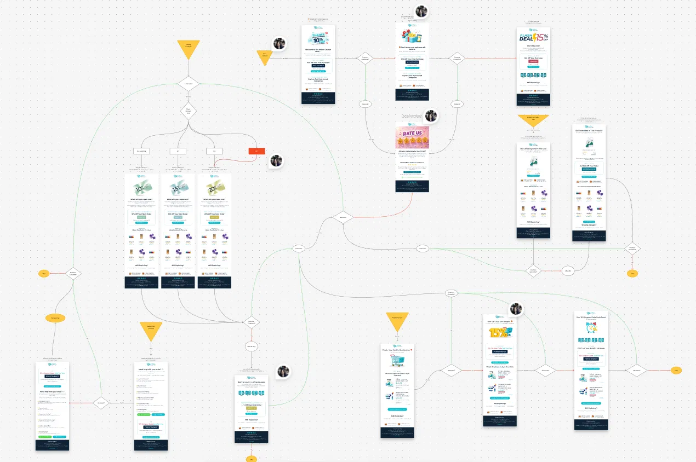
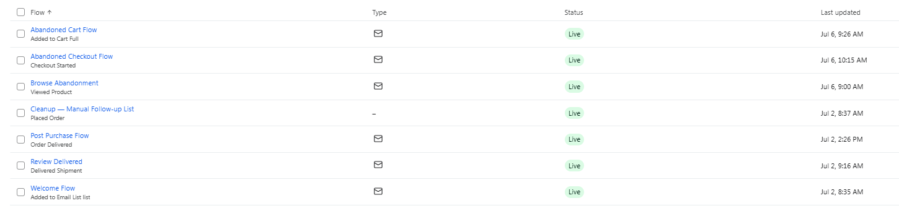
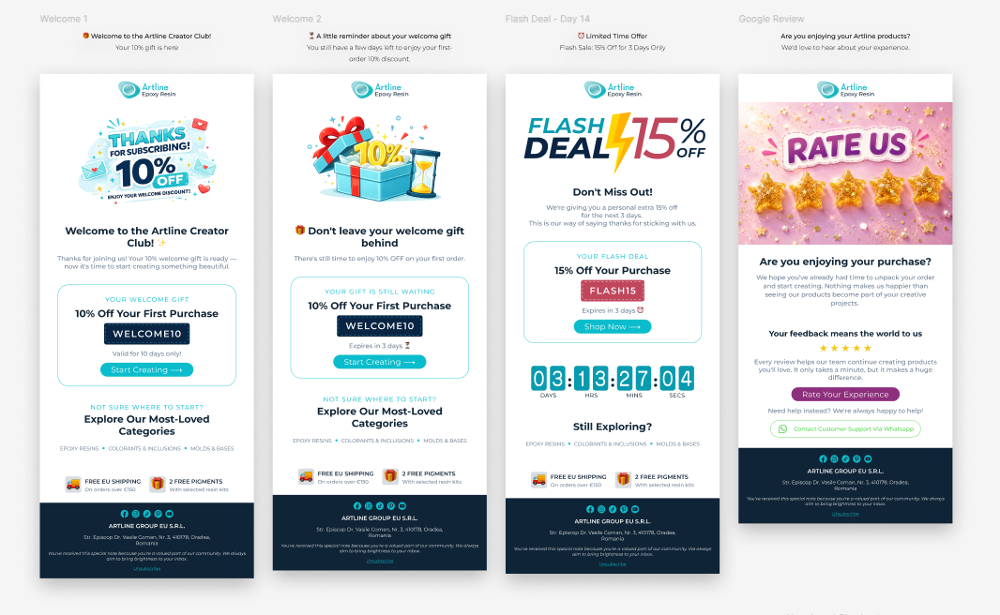
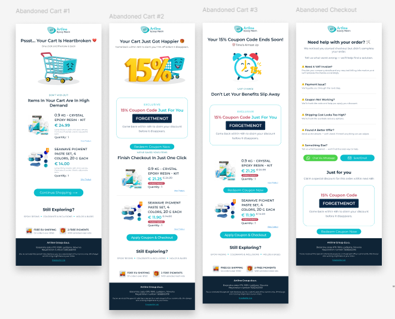
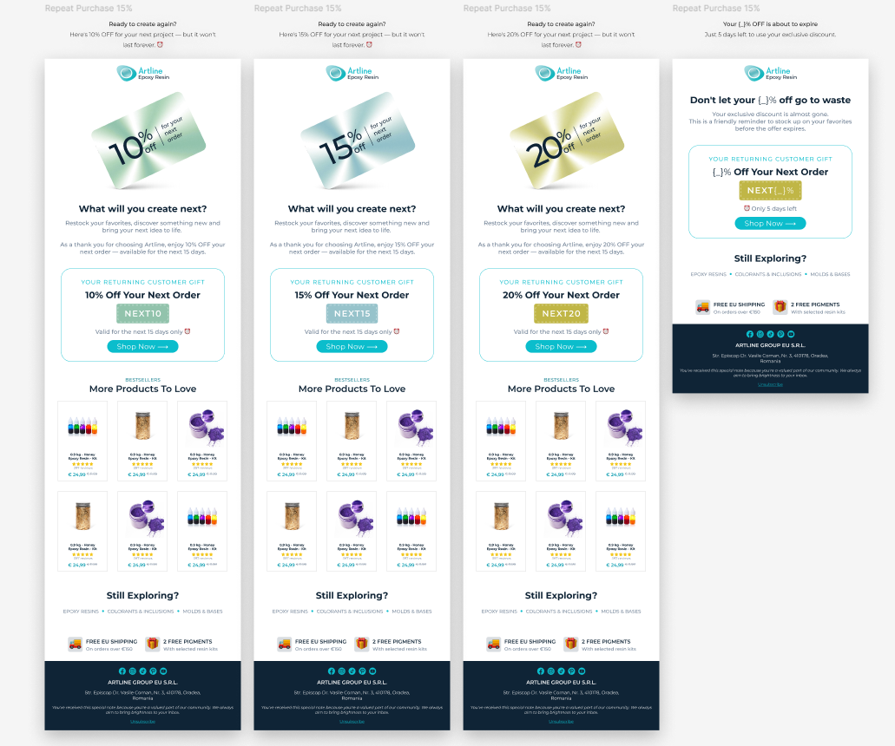
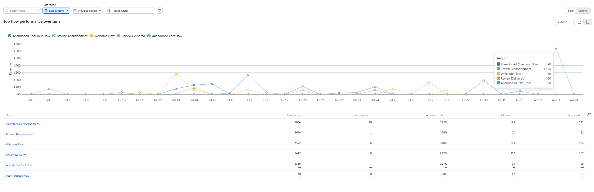
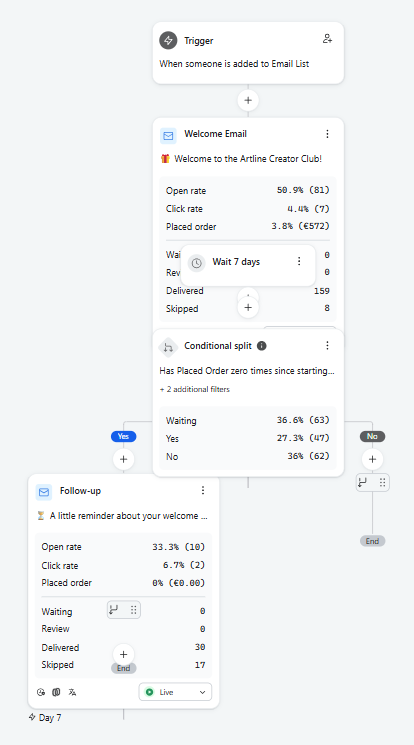
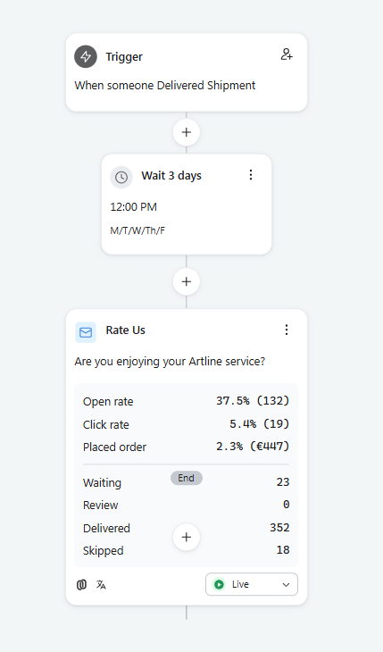
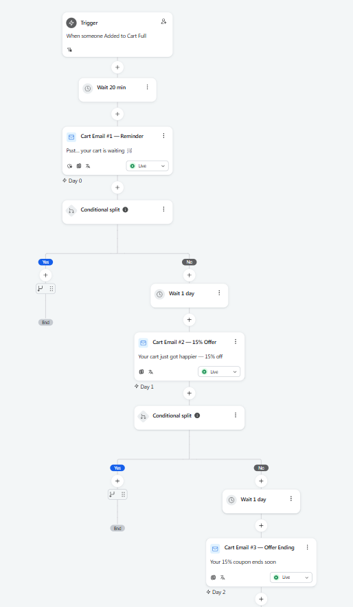
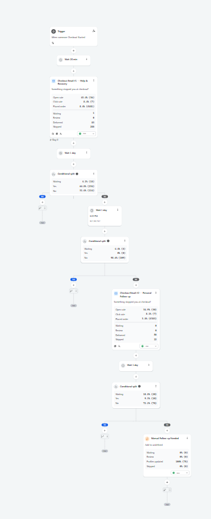

Migrated Artline's email marketing from Shopify's native email to Klaviyo, rebuilding automation flows for a more effective, purpose-built platform
Core Tech
Email marketing ran on Shopify's native email tool, with flows built independently of each other. They weren't tied to a coherent customer journey: messages could overlap or conflict, and a subscriber could land in an unrelated flow instead of the one that actually matched where they were in their relationship with the brand. Language targeting compounded the problem: a subscriber's language was inferred from browser or IP-based geolocation rather than their actual country, so a meaningful share of the list was receiving emails in the wrong language. Conversion sat below 3% as a result.
Migrated Artline Creator Club's email marketing from Shopify to Klaviyo and rebuilt the automation flows around it, integrated with n8n for delivery-triggered review requests and Shopify for order and customer data.
The flows were rebuilt as one connected map in Klaviyo, so a subscriber moves between welcome, cart recovery, reorder, and review flows based on their actual behavior, instead of each flow running in isolation.
The subscriber list was cleaned, and language and country targeting was rebuilt to use the values stored on each customer's Shopify record, set at checkout, rather than inferred from IP or browser geolocation. Messages started matching what the customer actually selected instead of a guessed location, fixing the mismatch that had been sending emails in the wrong language to a meaningful share of the list.

Seven flows now run live in Klaviyo, each triggered by a specific customer action rather than a broadcast schedule.

New subscribers get a welcome email with a 10% code, followed by a reminder a few days later if the code hasn't been used. On day 14, a separate flash deal offers a fresh, time-limited discount rather than repeating the same welcome offer. After a purchase, a review request closes the loop, asking for feedback and linking to WhatsApp support for anyone who needs help instead of leaving a review. Each of these exits feed back into the reorder and win-back flows shown in the map above, rather than running as dead ends.

Cart recovery runs as a four-step sequence with an escalating tone: an initial reminder showing the items left behind, a discount code offer, a follow-up as that code nears expiry, and a final message that shifts from discounting to support, offering a checkout FAQ and a direct WhatsApp line for anyone stuck on payment, shipping, or a coupon that isn't working.

Returning customers get a tiered thank-you offer (10%, 15%, or 20% off their next order) based on their purchase history, sent with a 15-day window and a reminder before it expires. Rather than a flat discount for everyone, the tier signals which customers the brand most wants to bring back, while product recommendations keep the email relevant beyond just the coupon.

Behind each design is branching, conditional logic in Klaviyo: wait steps, yes/no splits based on whether a code was used or an order was placed, and per-flow performance tracked directly in Klaviyo's reporting. In the first 30 days of the testing period after rebuild, the five active flows generated €2,848 in attributed revenue across 32 conversions, led by Abandoned Checkout (€804, 5.92% conversion) and Browse Abandonment (€636, 4.76%). Volume is still early since the flows are newly live, but the conversion rates and revenue-per-flow already show which sequences are working.





€2,848
Attributed revenue (first 30 days)
7.07%
Top flow conversion (up from under 3%)
7
Live automation flows